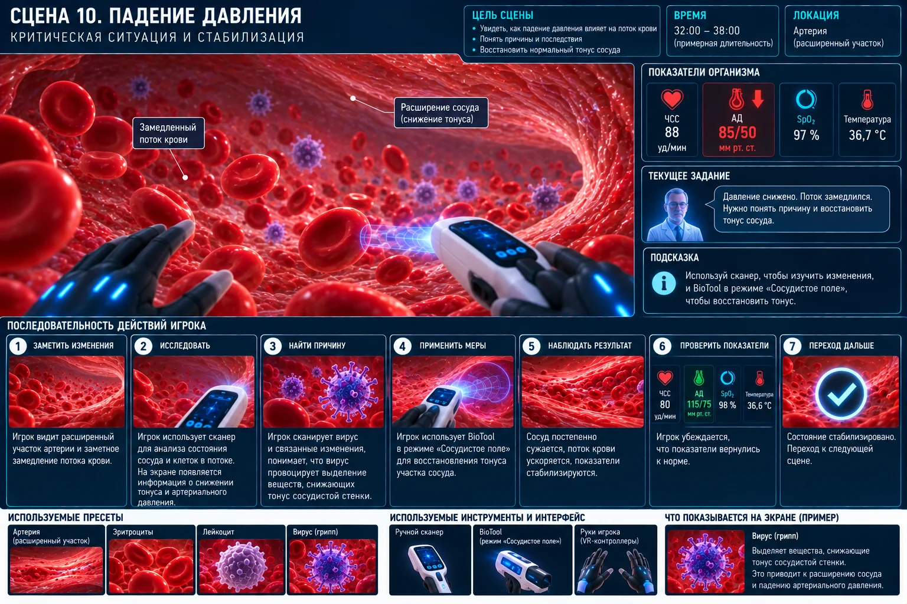

Scene 10 · 23:00–25:00
Падение давления
Показать падение давления и временное управление тонусом сосуда.

Сценарная последовательность
Зафиксировать падение АД
Открыть сосудистое поле
Умеренно сузить участок
Получить временную стабилизацию
Увидеть повторное падение
Получить задачу найти причину
Технические требования сцены
Сцена 10 принципиально не добавляет новых биологических объектов: игрок работает только с уже известной артерией, потоком, эритроцитами, BioTool, HUD, экраном и профессором.
- Никаких новых объектов: только параметры уже существующих пресетов.
- Сосудистое поле изменяет локальный radius/tone parameter.
- После временного успеха система принудительно возвращает тренд падения давления.